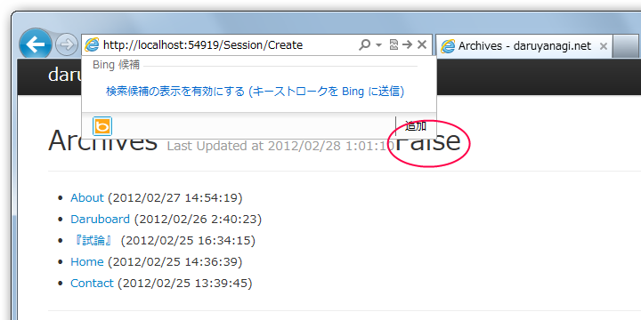
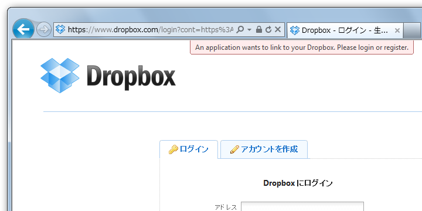
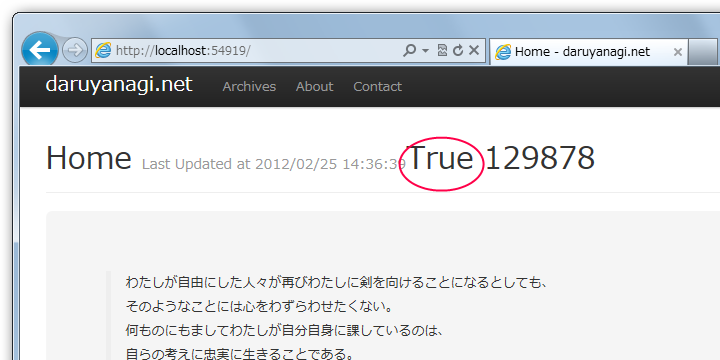

ASP.NET MVC 3 で Dropbox の OAuth 認証を使う
公開日：
今回は Sharpbox を使って、Webサイトに Dropbox を利用したログイン機能を追加します。まず、 SessionController というコントローラを作成して、Create()、AuthorizationCallBack()、Delete() の3つのメソッドを作成しました。/Session/Create が /LogOn に、/Session/Delete が /LogOff にあたります*1。

ビューへ適当に @Request.IsAuthenticated を埋め込んでいるのでわかりにくいですけど、今は False 、つまりログインしていない状態です。では、 Create() から。
/Session/Create
//
// GET: /Session/Create -> map route /LogOn
public ActionResult Create()
{
string app_key = "***";
string app_secret = "***";
// 0. load the config
DropBoxConfiguration config = DropBoxConfiguration
.GetStandardConfiguration();
config.AuthorizationCallBack = new Uri(
Request.Url, "AuthorizationCallBack");
// 1. get the request token from dropbox
DropBoxRequestToken requestToken = DropBoxStorageProviderTools
.GetDropBoxRequestToken(config, app_key, app_secret);
// 2. build the authorization url based on request token
string url = DropBoxStorageProviderTools
.GetDropBoxAuthorizationUrl(config, requestToken);
// 3. Redirect to the authorization page on dropbox
return Redirect(url);
}
面倒くさい RequestToken の作成や Callback Url の生成は DropBoxStorageProviderTools がやってくれるので簡単。あとは 生成した Callback Url へリダイレクトしてやればいいです。

/Session/AuthorizationCallBack
Dropbox の認証画面でのログインが完了すると、0. で設定した config.AuthorizationCallBack つまり AuthorizationCallBack() にリダイレクトがかかります。
public ActionResult AuthorizationCallBack()
{
// 4. Get oauth token and uid from Request.Form[]
var oauth_token = Request["oauth_token"];
var uid = Request["uid"];
// 5. Set auth cookie
if (oauth_token != null && uid != null)
{
FormsAuthentication.SetAuthCookie(uid, true);
}
return Redirect("/");
}
AuthorizationCallBack() では、まずリクエストに含まれる OAuth Token と UID を取り出します。ちゃんとこれらが取得できていれば、クッキーをセットしてログインが終了。今回はログインの成功・失敗に関わらず、"/" へリダイレクトしています。

@Request.IsAuthenticated が true に。これまたわかりにくいですが @User.Identity.Name には UID がセットされました。
/Session/Delete
//
// GET: /Session/Delete -> map route /LogOff
public ActionResult Delete()
{
FormsAuthentication.SignOut();
return Redirect("/");
}
ついでに Delete() も実装して、ログアウトできるようにしておきましょう。
こんな感じでいいのかな？
*1:あとでルーティングを追加すればいいでしょう